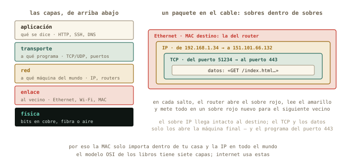
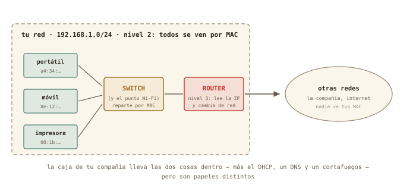
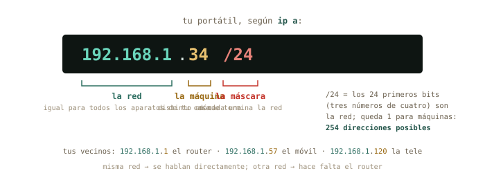
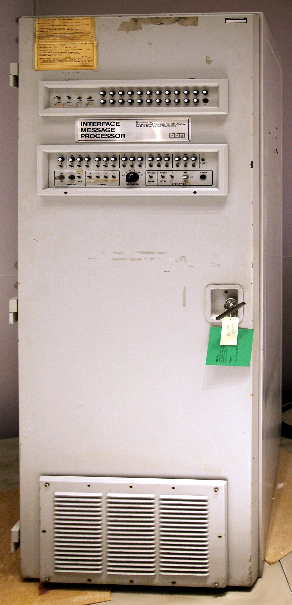
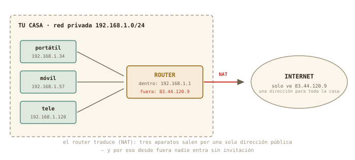
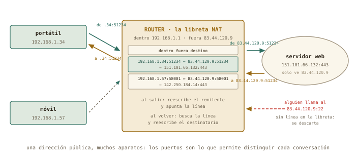

9 Qué es una red
Tu servidor recién instalado tiene una dirección — 192.168.122.15 — que todavía no sabes leer. Empieza el bloque D con la pregunta que todo el mundo se hace y casi nadie responde: qué significan esos cuatro números, quién los reparte, por qué tu casa entera sale a internet con una sola dirección, y qué hay dentro de esa caja con lucecitas que te dio la compañía. Hoy la abres — en modo solo lectura — y haces el censo de todos los aparatos que viven en tu red.
Al terminar esta sesión sabrás
- Cómo se hablan dos ordenadores: el modelo de capas, qué sobre pone cada una, y por qué la MAC no sale de tu casa mientras la IP recorre el mundo.
- Leer tu ficha de red con
ip aeip route: interfaz, dirección MAC, dirección IP, máscara y puerta de enlace. - Qué significa el
/24de una dirección, y cómo decide quién puede hablar con quién directamente. - Quién reparte las direcciones — DHCP — y por qué tu portátil sabe la suya sin que se la hayas dicho.
- Medir con
pingsi una máquina responde y cuánto tarda — y qué tiene que ver ese tiempo con la velocidad de la luz. - La diferencia entre tu dirección privada y la pública, y cómo el router traduce entre ambas con su tabla NAT — paso a paso, con la respuesta de vuelta incluida.
- Entrar en la página de administración de tu router, orientarte en ella y hacer el censo de tu red sin tocar nada.
9.1 Cómo se hablan dos ordenadores
Antes de teclear nada, el modelo mental — porque con él, todo lo que sigue es leer; sin él, es memorizar. Cuando tu portátil envía algo a otro ordenador — una página, un ping, una sesión SSH — no manda «un mensaje»: lo trocea en paquetes de unos pocos miles de bytes, y cada paquete viaja por su cuenta, metido en varios sobres, uno dentro de otro. Cada sobre lo escribe y lo lee una capa distinta, y eso es todo lo que hay que saber del famoso modelo de capas: los libros lo cuentan con siete (el modelo OSI); internet usa en la práctica cinco, y son estas:
| Capa | Qué resuelve | Con qué | Dónde la verás |
|---|---|---|---|
| Aplicación | qué se dice | HTTP, SSH, DNS | capítulos 10–12 |
| Transporte | a qué programa de la máquina va, y si llega entero y en orden | TCP, UDP, los puertos | capítulo 10 |
| Red | a qué máquina del mundo va, aunque esté a diez saltos | IP, direcciones, routers | este capítulo |
| Enlace | al vecino de al lado, por este cable o esta Wi-Fi | Ethernet, Wi-Fi, direcciones MAC | ip a, línea link/ether |
| Física | bits convertidos en voltios, luz o radio | cobre, fibra, aire | tu asignatura |

La analogía postal lo deja claro. Tú escribes la carta (los datos). La metes en un sobre con el número de piso (el puerto: qué programa, entre los muchos de esa máquina, debe abrirla). Ese sobre va dentro de otro con la dirección de la calle (la IP: qué máquina del mundo). Y ese, dentro de un sobre más que solo entiende el repartidor de tu barrio (la MAC: qué aparato de esta red, por este cable). En cada salto, el repartidor abre el sobre exterior, lee la calle del siguiente, y vuelve a envolver para el siguiente repartidor. Por eso la MAC solo importa dentro de tu casa y la IP importa en todo el mundo; por eso un router no es más que una máquina que lee el sobre IP y decide por qué puerta sale; y por eso los puertos, que verás en el capítulo 10, son el número de piso que hace posible que una dirección sirva a muchos programas — y, como descubrirás dentro de un rato, a muchas casas.
9.2 Nivel 2 y nivel 3: switches y routers
Dos de esas capas tienen aparato propio, y conviene distinguirlos porque en la caja de tu compañía van juntos. Un switch trabaja en el nivel 2, el de enlace: tiene varias bocas de cable, aprende qué MAC hay detrás de cada una y reparte los sobres dentro de tu red sin mirar la IP — es el repartidor del barrio. El punto de acceso Wi-Fi es un switch sin cables. Un router trabaja en el nivel 3, el de red: tiene una pata en cada red, lee el sobre IP y decide por cuál sale el paquete — es el que te saca del barrio. La regla que ya conoces, dicha con los aparatos: misma red, switch; otra red, router.

La «caja del router» de tu salón es en realidad cuatro o cinco aparatos en uno: un switch (las bocas amarillas de detrás), un punto de acceso Wi-Fi, un router, un servidor DHCP y un pequeño servidor de nombres — y un cortafuegos (capítulo 10). Cuando su página web te enseñe pestañas separadas para LAN, Wi-Fi, WAN y DHCP, estás viendo esos papeles por separado. Si algún día necesitas más bocas de cable, lo que compras es un switch de veinte euros: se enchufa al router y todo sigue siendo una sola red.
9.3 Tu ficha de red: ip a
El comando de este bloque es ip, y su primera pregunta es «¿quién soy en la red?»: ip a (address). La salida asusta la primera vez; léela por bloques, que cada bloque es una interfaz — una tarjeta de red, real o virtual:
marcos@portatil:~$ ip a
1: lo: <LOOPBACK,UP,LOWER_UP> mtu 65536 ...
inet 127.0.0.1/8 scope host lo
2: wlp3s0: <BROADCAST,MULTICAST,UP,LOWER_UP> mtu 1500 ...
link/ether a4:34:d9:1c:7e:02 brd ff:ff:ff:ff:ff:ff
inet 192.168.1.34/24 brd 192.168.1.255 scope global dynamic wlp3s0
3: virbr0: <NO-CARRIER,BROADCAST,MULTICAST,UP> mtu 1500 ...
inet 192.168.122.1/24 brd 192.168.122.255 scope global virbr0Tres interfaces. lo es el loopback: la máquina hablando consigo misma (127.0.0.1 siempre eres tú — la usarás en el capítulo 11). wlp3s0 es tu Wi-Fi (enp… sería el cable), con dos direcciones distintas — una por capa: la MAC (link/ether a4:34:…, el número de serie grabado en la tarjeta de fábrica: capa de enlace, el sobre del barrio) y la IP (inet 192.168.1.34/24, la que te ha tocado en esta red: capa de red, el sobre con la calle). Y virbr0 es el router de mentira del capítulo 7 — la red NAT de tus máquinas virtuales. Ese dynamic al final de tu IP es una pista para dentro de dos secciones.
✚ Truco · La misma ficha, en el icono de red
El icono de red de tu escritorio (clic → Información de la conexión) muestra exactamente esto: dirección IP, máscara, puerta de enlace, DNS. Es la vía gráfica de ip a, y perfectamente digna para un vistazo. La terminal gana cuando la máquina no tiene escritorio — tu debian-lab — o cuando quieres pegarlo en un correo pidiendo ayuda: «esto es lo que dice ip a» es la frase con la que empiezan todos los diagnósticos de red.
9.4 El /24: red y máquina
Una dirección IP son cuatro números de 0 a 255 — cuatro bytes, tú sabes de esto — y el /24 es la máscara: dice cuántos bits del principio identifican la red y cuántos quedan para la máquina.

Con /24, los 24 primeros bits — tres números — son la red: 192.168.1. Queda un byte para las máquinas: 254 direcciones útiles (la .0 nombra a la red y la .255 es la de «todos a la vez»).
La misma máscara se escribe de tres maneras, y te encontrarás las tres: la barra (/24) que usa ip a; la decimal con puntos (255.255.255.0) que enseñan el icono de red y el router; y la binaria, que es lo que la máquina usa de verdad — unos donde hay red, ceros donde hay máquina. Basta con escribirla en binario una vez para que las otras dos dejen de ser arbitrarias:
| Barra | Decimal con puntos | Binario | Máquinas útiles | Típico de… |
|---|---|---|---|---|
/24 |
255.255.255.0 |
11111111.11111111.11111111.00000000 |
254 | tu casa, un laboratorio |
/16 |
255.255.0.0 |
11111111.11111111.00000000.00000000 |
65 534 | un campus |
/8 |
255.0.0.0 |
11111111.00000000.00000000.00000000 |
16 777 214 | la red 10.x.x.x de una multinacional |
/25 |
255.255.255.128 |
11111111.11111111.11111111.10000000 |
126 | media casa: la máscara ya no cae en un punto |
/30 |
255.255.255.252 |
11111111.11111111.11111111.11111100 |
2 | un enlace entre dos routers |
Dos ejemplos leídos del todo. 192.168.1.34/24: máscara 255.255.255.0, en binario 24 unos y 8 ceros; red 192.168.1.0, máquina 34, vecinos del .1 al .254. Y 10.20.30.40/8: máscara 255.0.0.0, 8 unos y 24 ceros; red 10.0.0.0, y los otros tres números — 20.30.40 — identifican la máquina entre casi 17 millones. El /25 es el que delata a quien no ha visto el binario: el 128 de 255.255.255.128 es simplemente 10000000 — un bit más de red, robado a las máquinas.
Y la regla que lo explica todo: dos máquinas de la misma red se hablan directamente; para llegar a otra red hace falta un intermediario, el router, al que tu máquina llama puerta de enlace (gateway). ip route te dice cuál es la tuya:
marcos@portatil:~$ ip route
default via 192.168.1.1 dev wlp3s0 proto dhcp metric 600
192.168.1.0/24 dev wlp3s0 proto kernel scope link src 192.168.1.34
192.168.122.0/24 dev virbr0 proto kernel scope link src 192.168.122.1Léelo como instrucciones de un GPS: «para 192.168.1.0/24 (mi casa), sal directo por la Wi-Fi; para 192.168.122.0/24 (mis VMs), por virbr0; para todo lo demás (default), entrégaselo a 192.168.1.1». Ese 192.168.1.1 es tu router — el que abrirás al final del capítulo.
9.5 ¿Quién reparte las direcciones? DHCP
Nunca le has dicho a tu portátil que es el .34. Se lo dijo el router, mediante DHCP (Dynamic Host Configuration Protocol): al conectarte, tu máquina grita a la red «¿alguien me da una dirección?» y el servidor DHCP del router le responde con un préstamo — una dirección libre, la máscara, la puerta de enlace y el servidor de nombres (capítulo 10) — por un tiempo limitado, que se renueva solo. De ahí el dynamic de ip a, y de ahí que tu móvil cambie de número de vez en cuando.
Y ya lo has visto funcionar dos veces sin saberlo: la red default de libvirt lleva su propio servidor DHCP — por eso debian-lab apareció con 192.168.122.15 sin configurar nada —, y el instalador de Debian pidió su dirección exactamente así. El mismo mecanismo a tres escalas: tu casa, tu hipervisor, el campus de la universidad.
Lo que reparte un DHCP es siempre el mismo lote, y son los cuatro o cinco parámetros que verás en cualquier pantalla de red del mundo:
| Parámetro | Ejemplo | Para qué |
|---|---|---|
| Dirección IP | 192.168.1.34 |
tu número en la red |
| Máscara | /24 = 255.255.255.0 |
hasta dónde llega «mi red» |
| Puerta de enlace | 192.168.1.1 |
a quién dar lo que va a otra red: el router |
| Servidor DNS | 192.168.1.1 o 9.9.9.9 |
quién traduce nombres (capítulo 10) |
| Duración del préstamo | 24 h | cada cuánto se renueva |
Y con eso ya puedes leer — y en el capítulo 10, tocar — la pestaña DHCP de tu router, que tiene siempre la misma forma: la dirección del propio router, un rango de direcciones que reparte (algo como 192.168.1.100 a .200), la duración, y una lista de reservas: «a esta MAC, siempre esta IP». Lo usual en una casa bien puesta es dejar el rango para lo que va y viene (móviles, visitas) y reservar direcciones fijas para lo que debe encontrarse siempre en el mismo sitio: la impresora, un NAS, tu debian-lab si algún día vive en un PC físico. Lo que no se toca sin motivo: la dirección del router y la máscara.
¿Y por qué 192.168.1.x en casi todas las casas? Porque hay tres bloques de direcciones reservados para uso privado, y los fabricantes eligen del más pequeño:
| Bloque privado | Cuántas redes /24 caben | Dónde lo verás |
|---|---|---|
192.168.0.0/16 |
256 | casas y oficinas pequeñas (192.168.0.x, 192.168.1.x) |
172.16.0.0/12 |
4 096 | empresas, y la red interna de Docker |
10.0.0.0/8 |
65 536 | universidades, multinacionales, redes de la compañía |
Si dos casas usan 192.168.1.x no chocan: cada una está detrás de su propio NAT, que es la siguiente sección. Y si un día montas una VPN con la universidad y las dos redes se llaman igual, sabrás por qué no funciona — y que la solución es cambiar la tuya a 192.168.37.x, cualquier número que nadie use.
✚ Truco · Los mismos parámetros, en la ventana de red
El icono de red de Mint → Configuración de red (o Editar conexiones) → tu Wi-Fi → pestaña IPv4: ahí están, con botones, los cinco parámetros de la tabla. Automático (DHCP) es lo normal; Manual te deja escribir IP, máscara, puerta de enlace y DNS a mano — lo que necesitarías en un laboratorio sin DHCP. Para que tu portátil tenga siempre la misma dirección en casa, la vía limpia no es Manual aquí sino una reserva en el router (capítulo 10): así la decisión vive en un solo sitio y no choca con el reparto del DHCP.
◷ Historia · La primera palabra de la red fue «LO»
El 29 de octubre de 1969, un estudiante de UCLA llamado Charley Kline intentó escribir LOGIN en un ordenador de Stanford, a 500 km, a través de dos armarios llamados IMP — los primeros routers de la historia, fabricados por BBN a partir de un miniordenador Honeywell blindado para uso militar. Tecleó la L, llegó. Tecleó la O, llegó. Al teclear la G, el sistema de Stanford se cayó. La primera palabra transmitida por la red que acabaría siendo internet fue, por accidente, «LO». Aquella red, ARPANET, tenía cuatro nodos; las reglas que inventó para que máquinas distintas se entendieran — trocear los mensajes en paquetes, darle a cada máquina una dirección, dejar que los intermediarios decidan el camino — son las que tu ip route está aplicando ahora mismo.


9.6 ¿Estás ahí? ping
ping manda un paquete diminuto a una dirección y cronometra la respuesta. Es el estetoscopio de las redes: responde a «¿esa máquina existe y me oye?» y de propina mide cuánto tarda:
marcos@portatil:~$ ping -c 3 192.168.1.1
PING 192.168.1.1 (192.168.1.1) 56(84) bytes of data.
64 bytes from 192.168.1.1: icmp_seq=1 ttl=64 time=2.31 ms
64 bytes from 192.168.1.1: icmp_seq=2 ttl=64 time=2.08 ms
64 bytes from 192.168.1.1: icmp_seq=3 ttl=64 time=2.44 ms
--- 192.168.1.1 ping statistics ---
3 packets transmitted, 3 received, 0% packet loss, time 2003ms
marcos@portatil:~$ ping -c 3 192.168.122.15
64 bytes from 192.168.122.15: icmp_seq=1 ttl=64 time=0.41 ms
...
marcos@portatil:~$ ping -c 3 8.8.8.8
64 bytes from 8.8.8.8: icmp_seq=1 ttl=115 time=14.7 ms
...Tres medidas, tres escalas: el router de casa a 2 ms, la máquina virtual a 0,4 ms (no hay cable que recorrer: está dentro de tu RAM), y un servidor de Google a 15 ms. -c 3 limita a tres paquetes — sin él, ping sigue hasta que lo pares con Ctrl+C (la señal del capítulo 5). Y ese 8.8.8.8 sin nombre es a propósito: hoy hablamos con números; los nombres llegan en el capítulo 10.
◉ Por dentro · ping y la velocidad de la luz
Ese tiempo es de ida y vuelta, y tiene un mínimo físico que puedes calcular. En fibra la luz va a unos dos tercios de c — 200 000 km/s —, así que cada milisegundo de ida y vuelta corresponde como mucho a 100 km de distancia. Un servidor a 15 ms está, como mínimo, en un radio de 1 500 km; uno a 150 ms está seguro al otro lado de un océano, y nada lo bajará de ahí — ni la fibra más cara. Es la razón por la que los centros de datos se construyen cerca de sus usuarios, y por la que un clúster «en la nube» a 5 000 km nunca se sentirá tan inmediato como la máquina de al lado. Pocas veces un comando de terminal te deja medir una constante fundamental.
9.7 Privada, pública, y el NAT entre medias
Hay algo raro en tu 192.168.1.34: millones de casas del mundo tienen exactamente esa misma dirección. No es un error: las redes 192.168.x.x, 10.x.x.x y 172.16–31.x.x son direcciones privadas, reservadas para uso interno y repetidas en cada casa, oficina o laboratorio. Internet nunca las ve. Lo que internet ve es la dirección pública de tu router — una sola para toda la casa — y la traducción entre ambas es el NAT (Network Address Translation):

¿Cómo puede una sola dirección servir a toda la casa? Con los sobres de la primera sección, paso a paso. Tu portátil pide una página web: sale un paquete que dice «de 192.168.1.34, puerto 51234 → a 151.101.66.132, puerto 443». El router lo intercepta antes de que salga a internet y hace dos cosas: reescribe el remitente — ahora dice «de 83.44.120.9, puerto 51234», su dirección pública — y apunta una línea en su libreta: «lo que vuelva dirigido a 83.44.120.9:51234 es en realidad para 192.168.1.34:51234». El servidor responde a la única dirección que conoce, la pública; el router recibe la respuesta, busca la línea, y reescribe el destinatario: → a 192.168.1.34:51234. Tu portátil recibe su página y nunca supo que le cambiaron el nombre. Mientras, tu móvil hace lo mismo con otro puerto (58001) y tiene su propia línea. Esa libreta es la tabla NAT:
| Dentro (privado) | Fuera (público) | Hablando con |
|---|---|---|
192.168.1.34:51234 |
83.44.120.9:51234 |
151.101.66.132:443 |
192.168.1.57:58001 |
83.44.120.9:58001 |
142.250.184.14:443 |

De esta libreta salen todas las consecuencias que importan. Un paquete que llega desde internet sin que nadie de casa lo haya pedido — alguien probando suerte en tu puerto 22 — no tiene línea en la tabla: el router no sabe a quién dárselo y lo descarta. Por eso desde fuera nadie entra sin invitación. Cuando quieras que alguien entre — tú mismo por SSH desde la universidad —, tendrás que escribir a mano una línea permanente: «lo que llegue al puerto 22 público, dáselo siempre a 192.168.1.34» — es el reenvío de puertos del capítulo 10. Y fíjate en el detalle que explica el capítulo siguiente: la traducción funciona gracias a los puertos. La dirección pública es la calle; los puertos son los pisos, y el router puede permitirse una sola calle porque tiene sesenta y cinco mil pisos que repartir entre las conversaciones de toda la casa.
Puedes ver las dos caras desde tu terminal: la privada en ip a, y la pública preguntándole a un servidor de fuera qué dirección ve:
marcos@portatil:~$ curl ifconfig.me
83.44.120.9Esa es tu casa vista desde internet — y coincidirá con la que el router llama WAN en su página. Dos remates. Tu debian-lab vive detrás de dos libretas — la de tu Mint (para la red 192.168.122.x) y la del router —: cada paquete suyo cambia de remitente dos veces al salir y de destinatario dos veces al volver. Y algunas compañías añaden una tercera libreta en sus propias instalaciones para miles de casas a la vez (el CG-NAT del ejercicio 9.3): entonces ni la línea escrita a mano en tu router sirve, porque el intruso — o tú desde la universidad — nunca llega a tu router. Muñecas rusas, todas con la misma lógica.
9.8 El router por dentro (solo lectura)
El 192.168.1.1 de ip route no es solo una dirección: es una página web. Escríbela en el navegador y aparecerá la administración de tu router — usuario y contraseña suelen estar en la pegatina de la caja (y si son los de fábrica, el capítulo 10 tendrá algo que decir). Cada compañía diseña la suya, pero todas tienen los mismos cajones; tu tarea hoy es encontrarlos sin tocar nada:
- Estado / Información: la dirección WAN (compárala con
curl ifconfig.me), el tiempo encendido, la versión del firmware. - Red local / LAN: la dirección del router (
192.168.1.1), y la configuración del servidor DHCP — el rango de direcciones que reparte (algo como.2a.254) y la duración de los préstamos. - Dispositivos conectados / Tabla DHCP / Lista de clientes: el tesoro del capítulo. Cada aparato con su nombre, su IP y su MAC — el censo de tu red.
- Wi-Fi: nombre de la red (SSID), canal, tipo de cifrado.
△ Cuidado · Hoy se mira; el capítulo 10 se toca
La regla de seguridad del curso, aplicada al router: esta sesión es de solo lectura. No cambies contraseñas, no reinicies, no toques el DHCP ni la Wi-Fi — un clic de más deja a toda la casa sin internet, y no hay instantánea que restaurar. En el capítulo 10 harás cambios reversibles, cada uno con su procedimiento de vuelta atrás escrito antes de tocar. Hoy, si te pica el dedo: ip a en la terminal, que no rompe nada.
¿Y si tu router no enseña la tabla de dispositivos, o la enseña a medias? Tu propia máquina lleva un censo parcial: ip neigh (los vecinos) lista las máquinas de tu red con las que has hablado últimamente, con sus MAC:
marcos@portatil:~$ ip neigh
192.168.1.1 dev wlp3s0 lladdr 3c:84:6a:b2:10:f1 REACHABLE
192.168.1.57 dev wlp3s0 lladdr 8e:12:5b:0a:77:c3 STALE
192.168.122.15 dev virbr0 lladdr 52:54:00:9a:4e:21 REACHABLEY para un censo completo por tu cuenta existe nmap, el explorador de redes: sudo apt install nmap y nmap -sn 192.168.1.0/24 toca a la puerta de las 254 direcciones y lista quién responde. Es una herramienta legítima sobre tu propia red; usarla sobre redes ajenas es, según dónde, un delito. Aquí, en casa, es tu censo de respaldo.
9.9 Práctica: el censo de casa
Cuaderno en marcha (script sesion09.log). Todo lo de hoy es lectura: ni un cambio en el router, ni un cambio en tu máquina.
Nivel 1 · Lo esencial
Ejercicio 9.1 · Tu ficha de red
Con ip a e ip route, rellena en tu cuaderno la ficha de tu portátil: nombre de la interfaz, dirección MAC, dirección IP, máscara y puerta de enlace. Después contrástala con la Información de la conexión del icono de red. Pista: la MAC es la línea link/ether; la IP y la máscara van juntas en inet; la puerta de enlace es el default via de ip route.
Algo como: wlp3s0 · a4:34:d9:1c:7e:02 · 192.168.1.34 · /24 · 192.168.1.1. El icono de red dice lo mismo con otras palabras («máscara de subred 255.255.255.0» es el /24 escrito en decimal).
Por qué así — Esta ficha es lo primero que te pedirá cualquiera a quien pidas ayuda con la red, y lo primero que tú pedirás cuando seas el que ayuda. Dos vías, una ficha: el principio de siempre.
Ejercicio 9.2 · Tres distancias
Haz ping -c 5 a tu router, a tu debian-lab (arráncala si está apagada) y a 8.8.8.8. Anota el tiempo medio de cada uno, y con la regla de «100 km por milisegundo» estima a qué distancia máxima está ese servidor de Google. Pista: la línea final rtt min/avg/max te da la media sin calcular nada.
Típicamente: router 1–5 ms, VM < 1 ms, 8.8.8.8 10–30 ms. Con 15 ms de ida y vuelta, el servidor está como mucho a unos 1 500 km — y probablemente mucho más cerca, porque el tiempo incluye el trabajo de cada router del camino, no solo el vuelo de la luz.
Por qué así — ping mide; la física acota. Distinguir «el mínimo que impone c» del «tiempo real con sus retrasos» es exactamente lo que hace un físico con cualquier medida — y te será útil cuando un clúster remoto «vaya lento»: primero, ¿cuánto tarda el ping?
Ejercicio 9.3 · Las dos caras
Averigua tu dirección pública con curl ifconfig.me y compárala con la privada de ip a. Después, en la página del router, localiza la dirección WAN y comprueba que coincide con la pública. Pista: si curl no está instalado, ya sabes: sudo apt install curl.
Privada 192.168.1.x; pública algo como 83.44.120.9, idéntica a la WAN del router. Si la WAN del router es también del tipo 100.64.x.x o 10.x.x.x, tu compañía te tiene detrás de un NAT adicional (se llama CG-NAT), y eso condicionará el capítulo 10.
Por qué así — Ver las dos direcciones con tus propios ojos convierte el NAT de concepto en hecho: toda la casa, un número.
Ejercicio 9.4 · El censo
En la página del router, encuentra la tabla de dispositivos conectados y pásala a tu cuaderno: nombre, IP y MAC de cada aparato. Identifica cuál es cada uno (portátil, móviles, tele, impresora…) y anota los que no reconozcas. Pista: si el router no la muestra o está incompleta, ip neigh en tu Mint es el plan B, y nmap -sn sobre tu /24, el plan C.
Una tabla de entre 5 y 20 filas es lo normal en una casa. Los aparatos «misteriosos» suelen ser el propio router, un enchufe inteligente, la consola o el móvil de alguien de visita — los tres primeros bytes de la MAC identifican al fabricante, y buscarlos en internet («MAC lookup») resuelve casi todos.
Por qué así — Es el ejercicio central del capítulo: saber quién vive en tu red es el principio de saber administrarla. En el capítulo 10, con esta lista, podrás hacer los cambios con criterio.
Nivel 2 · El mecanismo
Ejercicio 9.5 · La VM en el mapa
Dentro de debian-lab, ejecuta ip a e ip route. Compara con tu Mint: ¿cuál es la puerta de enlace de la VM? ¿Por qué la VM puede hacer ping a tu Mint y a 8.8.8.8, pero el router de casa no la tiene en su censo? Pista: mira el default via de la VM y búscalo en el ip a de tu Mint.
Puerta de enlace de la VM: 192.168.122.1 — que es virbr0, tu propio Mint. La VM está en la red privada de libvirt; tu Mint hace de router y NAT para ella, igual que el de casa hace para tu Mint. El router de casa solo ve salir paquetes de 192.168.1.34: la VM está escondida detrás, en un segundo NAT.
Por qué así — Es la figura del NAT aplicada dos veces, y la demostración de que un «router» no es una caja: es un papel que cualquier máquina Linux puede hacer. Tu Mint lleva haciéndolo desde el capítulo 7.
Nivel 3 · El reto (opcional)
Ejercicio 9.6 · Leer máscaras
Sin ejecutar nada: (a) ¿cuántas máquinas caben en una red /8 como 10.0.0.0/8? (b) ¿Y en una /30? (c) 192.168.1.34/24 y 192.168.2.10/24, ¿se hablan directamente o necesitan un router? Pista: bits para máquinas = 32 − máscara; caben 2 elevado a eso, menos las dos direcciones reservadas.
- 32 − 8 = 24 bits → 2²⁴ − 2 = 16 777 214 máquinas — el tamaño de una multinacional. (b) 32 − 30 = 2 bits → 4 − 2 = 2 máquinas: la red mínima, típica de un enlace punto a punto. (c) Con
/24, sus redes son192.168.1y192.168.2: distintas → necesitan un router aunque estén en la misma mesa.
Por qué así — La máscara es aritmética binaria, que dominas de la asignatura de computación; solo cambia el vocabulario. Y la (c) es la avería de red más común del mundo: dos máquinas «al lado» que no se ven porque alguien escribió mal un número.
9.10 Autocomprobación
Marca una respuesta por pregunta; la corrección es inmediata.
En 192.168.1.34/24, el /24 indica…
192.168.1, máquina .34, y 254 direcciones útiles para los vecinos./24 deja tres números para la red y uno para las máquinas.Tu portátil sabe su dirección IP porque…
ip a la marca como dynamic.La «puerta de enlace» (default via en ip route) es…
¿Cuál de estas es una dirección privada?
10.x.x.x, 192.168.x.x y 172.16–31.x.x son privadas: repetidas en millones de redes, invisibles desde internet.10.x, 192.168.x y 172.16–31.x. Las otras dos son públicas: únicas en el mundo.Gracias al NAT del router…
Un ping de 150 ms a un servidor te dice que…
Autocomprobación (test de la sección 9.8) — Respuestas: 1 b · 2 b · 3 a · 4 b · 5 b · 6 b.
La próxima sesión
Hoy has hablado con números; el capítulo 10 les pone nombre. Verás qué pasa exactamente al escribir debian.org — el DNS, la guía telefónica de internet —, seguirás el camino paquete a paquete hasta la universidad con tracepath, entenderás por qué SSH es el puerto 22 y la web el 443, y harás los primeros cambios reversibles en el router, con su vuelta atrás escrita antes de tocar. Guarda sesion09.log.
cap. 9 v0.1 · piloto — anota tiempo real invertido, dudas y erratas junto a tu sesion09.log